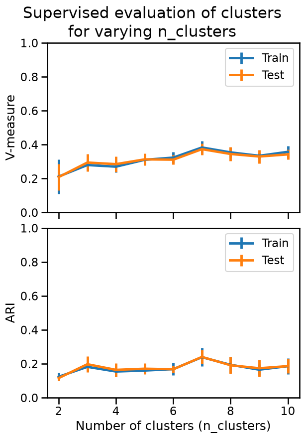
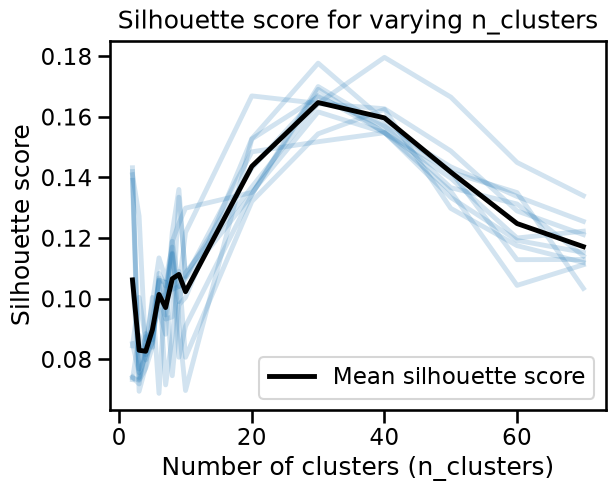

Clustering performance metrics in the presence of labels#
In this notebook we briefly introduce how to deal with text data. Then we introduce the use of performance metrics to evaluate a clustering model when we have access to labeled data. While a classifier trained on these labels would simply learn to reproduce the editorial categories, clustering may reveal finer-grained or alternative groupings, such as sub-topics within a single category, that classification would otherwise overlook. Our goal is to evaluate whether the cluster structure favored by k-means on the preprocessed text aligns with the editorial categories assigned by the Wikinews editors.
Feature engineering for text data#
Previously, we saw how categorical features can be converted into numbers
using techniques like one-hot encoding, where each category is assigned a
unique position in a vector. We can apply a similar idea to text: treat each
unique word as a feature (a column), and represent each document as a vector
(a row) indicating the word counts in it. This encoding process is known as
“vectorization”. Here is a quick example using CountVectorizer to turn a few
short phrases into a numerical table:
import pandas as pd
from sklearn.feature_extraction.text import CountVectorizer
docs = [
"This is a simple phrase",
"This phrase is shorter",
"The previous phrase is shorter than the first phrase",
]
vectorizer = CountVectorizer()
X_vectorized = vectorizer.fit_transform(docs)
pd.DataFrame(
X_vectorized.toarray(), columns=vectorizer.get_feature_names_out()
)
| first | is | phrase | previous | shorter | simple | than | the | this | |
|---|---|---|---|---|---|---|---|---|---|
| 0 | 0 | 1 | 1 | 0 | 0 | 1 | 0 | 0 | 1 |
| 1 | 0 | 1 | 1 | 0 | 1 | 0 | 0 | 0 | 1 |
| 2 | 1 | 1 | 2 | 1 | 1 | 0 | 1 | 2 | 0 |
Observe in particular that the words “the” and “phrase” are counted twice in the last document (the third row in the dataframe). This preprocessor creates as many features as unique words occurring in the data, therefore the dimension of the feature space can become very large.
Readers interested can visit the scikit-learn example on comparing vectorization strategies for more information.
Now let us use the Wikinews dataset to show how text documents can be clustered by topic.
data = pd.read_csv("../datasets/wiki_news.csv")
data
| category | text | |
|---|---|---|
| 0 | business | The besieged airline industry received some go... |
| 1 | business | The Dow Jones Industrial Average fell more tha... |
| 2 | business | The International Criminal Court has presented... |
| 3 | business | The online payment service PayPal has received... |
| 4 | business | The world's second largest auto parts maker, D... |
| ... | ... | ... |
| 1245 | tech | YouTubeThe online video sharing site YouTube h... |
| 1246 | tech | If you've noticed a fuzzy yellowish object at ... |
| 1247 | tech | NASA officials decided late Monday to go ahead... |
| 1248 | tech | The head of the United States National Nuclear... |
| 1249 | tech | Scientists have announced that the largest rad... |
1250 rows × 2 columns
The dataset consists of 1,250 samples divided into 5 different categories: “business”, “entertainment”, “sport”, “politics” and “tech”.
data["category"].value_counts()
category
business 250
entertainment 250
politics 250
sport 250
tech 250
Name: count, dtype: int64
We start by preprocessing the text data using StringEncoder, that encodes
text similarly to CountVectorizer and then reduces the dimension of the
feature space while trying to preserve the relative distance between pairs of
documents.
This encoder is well suited to cluster text using KMeans.
from skrub import StringEncoder
from sklearn.cluster import KMeans
from sklearn.pipeline import make_pipeline
model = make_pipeline(StringEncoder(), KMeans(n_clusters=3, random_state=0))
cluster_labels = model.fit_predict(data["text"])
pd.Series(cluster_labels).value_counts()
2 981
1 214
0 55
Name: count, dtype: int64
Our pipeline has grouped the documents into 3 clusters, even though the
dataset contains 5 categories assigned by Wikinews editors. We chose this on
purpose, to show that k-means always produces a number of clusters that
matches the n_clusters parameter, regardless of what’s in the data.
Supervised metrics for clustering evaluation#
Even though clustering is an unsupervised learning method, we have access to labels for the categories that were assigned by the Wikinews editors, allowing us to evaluate how well the cluster labels found by k-means match those human assigned labels.
We could try to use classification metrics such as the accuracy. However, the
integer identifiers of the clustering labels are arbitrarily ordered and
n_clusters does not need to match the number of predefined categories (as
we just did in the code above). More importantly, we don’t assume a
predefined mapping between cluster labels and editorial categories, and we
don’t need one to quantify their agreement. This is where supervised
clustering metrics come in.
In this notebook, we’ll use two metrics: V-measure and Adjusted Rand Index (ARI). The V-measure quantifies alignment of the clustering assignment with the Wiki category assignment used as reference by evaluating two properties:
homogeneity: each cluster contains only members of a single category;
completeness: all members of a given category are assigned to the same cluster.
V-measure ranges from 0 to 1, where 1 indicates perfect match between the clustering labels and the reference labels, both in terms of homogeneity and completeness.
The Adjusted Rand Index (ARI) also measures the similarity between the predicted clusters and editor-assigned labels: it compares pairs of articles to see whether if they are in the same cluster in both the predicted and editor-assigned labels. High ARI means that articles from the same category are grouped together, and articles from different categories are separated. ARI ranges from -1 (worse than random clustering) to 1 (perfect clustering), with 0 indicating a model that assigns cluster labels at random: this metric is therefore “adjusted for chance”, which is not the case for V-measure. Both V-measure and ARI follow a “higher is better” convention.
Read more in the User Guide for V-measure and the Rand index.
Let’s use these metrics to evaluate the clustering labels found by k-means
with different values of n_clusters by plotting the validation curves
for both of them:
import matplotlib.pyplot as plt
from sklearn.model_selection import ValidationCurveDisplay
from sklearn.model_selection import ShuffleSplit
cv = ShuffleSplit(n_splits=5, train_size=0.75, random_state=0)
data_encoded = StringEncoder(random_state=0).fit_transform(data["text"])
n_clusters_values = list(range(2, 11))
scoring_names = {
"V-measure": "v_measure_score",
"ARI": "adjusted_rand_score",
}
fig, axes = plt.subplots(
nrows=2, figsize=(6, 8), sharex=True, constrained_layout=True
)
for (scoring_name, scoring), ax in zip(scoring_names.items(), axes):
ValidationCurveDisplay.from_estimator(
KMeans(n_init=5, random_state=0),
data_encoded,
data["category"],
param_name="n_clusters",
param_range=n_clusters_values,
scoring=scoring,
std_display_style="errorbar",
cv=cv,
ax=ax,
)
ax.set(
ylim=(0.0, 1.0),
xlabel=None,
ylabel=scoring_name,
)
ax.set_xlabel("Number of clusters (n_clusters)")
_ = plt.suptitle(
"Supervised evaluation of clusters\nfor varying n_clusters", y=1.08
)

We observe that both V-measure and ARI reach their maximum value when
n_clusters=7. It does not match the number of human-assigned categories in
the dataset but is relatively close to it, possibly indicating the presence of
well-defined sub-clusters that still share information with those labels, for
example “tech - space” and “tech - internet”.
Note that the metrics measured on training or validation data are very similar, meaning that k-means with small number of clusters is unlikely to overfit noise from the training data.
But the question may arise, if we didn’t have access to labels at all, would
the silhouette score also lead us to chose n_clusters=5?
import numpy as np
from sklearn.metrics import silhouette_score
from sklearn.model_selection import train_test_split
n_clusters_values = list(range(2, 11)) + [20, 30, 40, 50, 60, 70]
all_scores = []
for random_state in range(1, 11):
data_train, data_test = train_test_split(
data_encoded, train_size=0.5, random_state=random_state
)
scores = []
for n_clusters in n_clusters_values:
model = KMeans(n_clusters=n_clusters, n_init=5, random_state=0)
cluster_labels = model.fit(data_train).predict(data_test)
score = silhouette_score(data_test, cluster_labels)
scores.append(score)
all_scores.append(scores)
plt.plot(n_clusters_values, scores, color="tab:blue", alpha=0.2)
plt.xlabel("Number of clusters (n_clusters)")
plt.ylabel("Silhouette score")
all_scores = np.array(all_scores)
plt.plot(
n_clusters_values,
all_scores.mean(axis=0),
color="black",
alpha=1,
label="Mean silhouette score",
)
plt.legend()
_ = plt.title("Silhouette score for varying n_clusters", y=1.01)

The silhouette analysis favors larger values for n_clusters (around
30) than the 5 categories chosen by the Wikinews editors, or than the 7
categories suggested by our supervised metrics. This also hints to the
existance of sub-clusters inside the 5 Wiki categories. The silhouette peak at
n_clusters=30 means that splitting the data into about 30 smaller categories
maximizes how compact each cluster is, and how well-separated it is from the
others.
However, categorizing news articles in too fine-grained topics would make the navigation on a news website too confusing. Therefore for this application, it can be meaningful to select a number of clusters that is smaller than the number of clusters which maximizes the silhouette score.
Nevertheless, the maximum silhouette score is not really high, which indicates that even with 30 categories, the clusters are not well-separated from each other. Some documents could meaningfully belong to more than one category, for instance, a news article about a tech company being acquired by another could belong to both “tech” and “business” categories.
Finally, notice that we used supervised information to quantitatively assess the quality of the match between the clusters found by k-means and our categorization. In practice, this is often impossible, as we do not have access to human assigned labels for each row in the data. Or, if we have, we might want to use them as the target variable to train a supervised classifier instead of training an unsupervised clustering model.